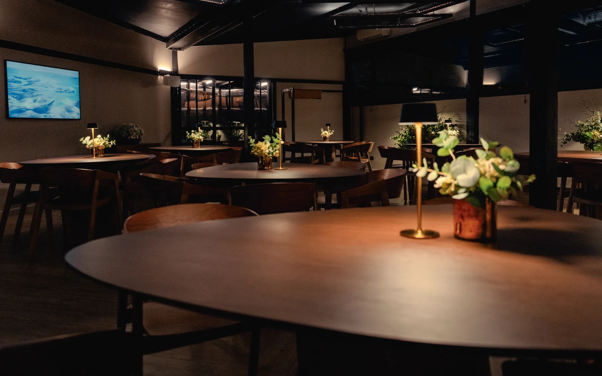
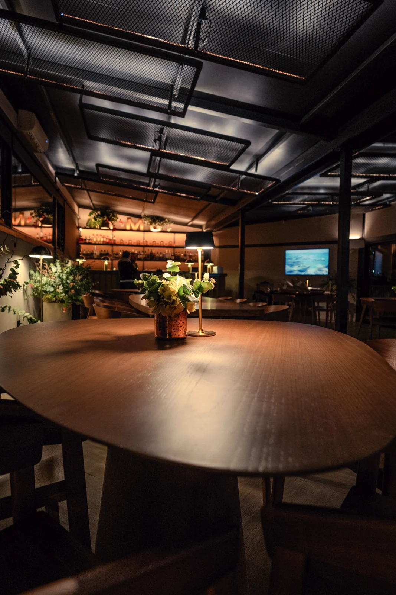
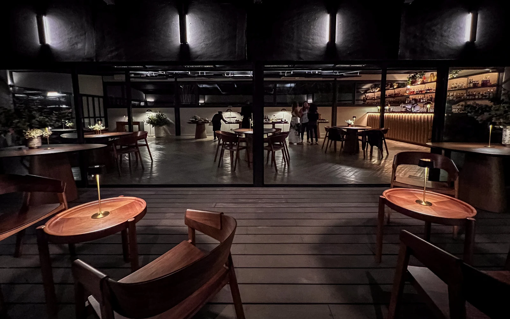
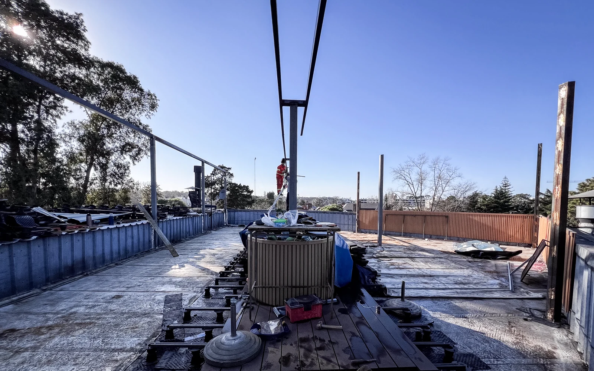

07 / PROYECTO
Matisse
Renovación del rooftop del centro comercial Matisse para incorporar eventos, espectáculos y nuevos usos durante todo el año.
El centro comercial Matisse, ubicado en Parque Miramar, necesitaba renovar su rooftop y ampliar sus posibilidades de uso.
La propuesta transforma el espacio para recibir eventos, charlas, encuentros y presentaciones. Al convertirse en un espacio techado, permite que el rooftop deje de depender exclusivamente de las condiciones exteriores, pero conservando la posibilidad de abrirse cuando el tiempo lo permite.
El resultado es un espacio más cálido y versátil, pensado para permanecer, reunirse y utilizar la terraza de nuevas maneras.




